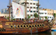
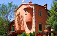
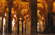

Fixed Dimensions
Images with fixed dimensions
images/114x72/1.jpg
-
Hohensalzburg Castle
Salzburg, Austriahttp://en.wikipedia.org/wiki/Hohensalzburg_Castle -
Isolated sandy cove
Zakynthos island, Greecehttp://en.wikipedia.org/wiki/Navagio
-
A view from the Old Town
Herceg Novi, Montenegrohttp://en.wikipedia.org/wiki/Herceg_Novi -
Walls of the Old Town
Kotor, Montenegrohttp://en.wikipedia.org/wiki/Kotor
-
Boat in the port
Sousse, Tunishttp://en.wikipedia.org/wiki/Sousse -
Wall of the Jain temple
Jaisalmer, Indiahttp://en.wikipedia.org/wiki/Jaisalmer
-
City park
Negotin, Serbiahttp://en.wikipedia.org/wiki/Negotin
-
Taj Mahal mausoleum
Agra, Indiahttp://en.wikipedia.org/wiki/Taj_mahal
-
Zante Port
Zakynthos, Greecehttp://en.wikipedia.org/wiki/Zante
-
Rustovo Monastery
Budva, Montenegrohttp://en.wikipedia.org/wiki/Budva -
The Mezquita, Cathedral and former Great Mosque
Cordoba, Spainhttp://en.wikipedia.org/wiki/C%C3%B3rdoba,_Spain -
Wine Cellars
Rajac, Serbiahttp://en.wikipedia.org/wiki/Rajac_(Negotin)


{kind=link}
{kind=link}
{kind=link}
{kind=link}
{kind=link}
Skin 'tn3e', variation 'bullets' Example
In order to use bullets, omit the thumbnails when defining the images or set thumbnailers 'mode' parameter to 'bullets'.
In this example, the "imageClick" property has been set to "url" and the URL field is defined for every image. With these settings, clicking on an image will open the URL that's defined for that image.